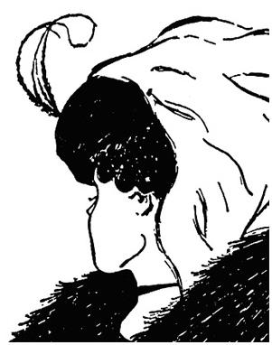
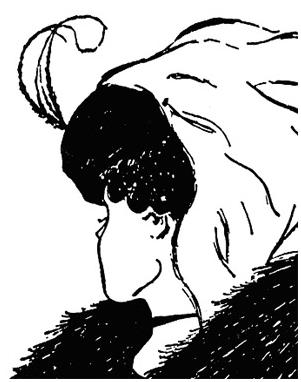

Złudzenia optyczne
Długość odcinków I
Odcinek narysowany pionowo wydaje się dłuższy od tego narysowanego poziomo.
W rzeczywistości oba odcinki są równej długości.
Dwa kwadraty
Kwadrat zakreskowany pionowo robi wrażenie szerszego, niż równy mu kwadrat
zakreskowany poziomo.
Koła I
Środki poniższych kół oraz ich punkty dolne leżą oczywiście na linii
krzywej. Wydaje się, że również punkty górne tych kół leżą na linii krzywej. W rzeczywistości leżą
one na linii prostej.
Koła II
Oba czerwone koła są równej wielkości, jednak to otoczone małymi czarnymi
kołami wydaje się większe.
Równe kąty
Oba czerwone kąty są równej miary, jednak ten znajdujący się po prawej
stronie wydaje się mniejszy.
Długość odcinków II
Oba czerwone odcinki są równej długości, jednak ten znajdujący się po prawej
stronie wydaje się dłuższy.
Równe odległości
Odległości między grotami strzałek pierwszej i drugiej oraz drugiej i
trzeciej są równej długości.
Równoległość I
Pionowe odcinki są równoległe. W wyniku dorysowania ukośnych kresek mamy
wrażenie, że nie ma tej równoległości.
Krzyże I
Biały krzyż na czarnym tle wydaje się większy od czarnego krzyża na białym
tle.
Krzyże II
Oba krzyże są namalowane w tym samym odcieniu szarości. W wyniku złudzenia
krzyż znajdujący się na czarnym tle wydaje się ciemniejszy.
Kręcąca się baletnica
W którym kierunku kręci się baletnica?

Schody Escher'a
Słoń
Ile nóg ma ten słoń?
Równoległość II
Czy linie poziome są równoległe?
Ukryta twarz I
Widzisz muzyka, czy twarz dziewczyny?
Ukryta twarz II
Widzisz starą kobietę, czy młodą dziewczynę?


Ukryta twarz III
Widzisz twarz Indianina, czy Eskimosa?
Gradientowe tło
Czy pasek narysowany po środku gradientowego tła jest jednego koloru?
Kaczka czy zając
Widzisz kaczkę, czy zająca?

Dziwna żaba
Czy jesteś w stanie dostrzec na tym rysunku łeb konia?
Czarne kropki
Policz czarne kropki.